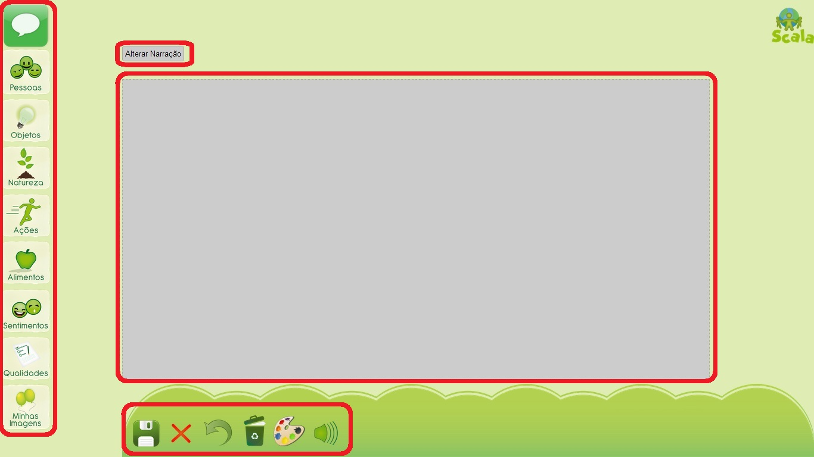

Módulo História
- 1 Modificando o Layout da História
- 2 Criando uma História
- 2.1 Apresentando Tela de Edição
- 2.2 Inserindo uma imagem
- 2.3 Opções de operações com imagens
- 2.3.1 Enviar imagem para frente e para trás
- 2.3.2 Aumentar e diminuir imagem
- 2.3.3 Girar uma imagem
- 2.3.4 Inverter uma imagem
- 2.3.5 Excluir uma imagem
- 2.4 Trocando de cenário
- 2.5 Desfazer uma operação e limpar quadrinho
- 2.6 Criar Narração
- 2.7 Reproduzir quadrinho
- 2.8 Concluir e cancelar quadrinho
- 3 Salvando História
- 4 Abrindo História
- 5 Exportando História
- 6 Imprimindo a história
- 7 Visualizando a história
- 8 Limpando a história
1 Modificando o Layout da História
Os layouts são as diversas opções que encontramos para organizar os quadrinhos da história. Alguns layouts possuem maior quantidade de quadrinhos e outros menor. Para modificar o layout da história basta clicar sobre a opção "Layout" que se encontra no menu inferior.
Imagem 1: Menu inferior - opção LayoutEscolha o layout clicando sobre ele e, para cancelar, clique em Voltar
 Imagem 2: Caixa de diálogo - Escolha um Layout
Imagem 2: Caixa de diálogo - Escolha um Layout2 Criando uma História
Para iniciar a sua história clique sobre um quadrinho do layout e serás redirecionado para uma página de confecção do quadrinho.
Após clicar no quadrinho, você entrará na tela de edição, e poderá criar seu quadrinho.
 Imagem 3: Modificar quadrinho
Imagem 3: Modificar quadrinho
2.1 Apresentando a Tela de Edição
A tela de edição apresenta na lateral esquerda, as categorias com as imagens, abaixo, oferece um menu com opções de edição, no centro encontra-se a área de edição e acima a legenda.
Imagem 4: Editar quadrinho
2.2 Inserindo uma imagem
Na tela de edição, para inserir uma imagem, deve-se inicialmente escolher uma das categorias à esquerda e clicar sobre ela para que apareçam as imagens da respectiva categoria.
Posteriormente, deve-se selecionar uma figura, e clicar em cima da tela de edição do quadrinho. A figura será posicionada no lugar que você clicou, como mostra a imagem abaixo.
 Imagem 5: Inserir imagem
Imagem 5: Inserir imagemCaso a figura a ser inserida seja um balão de fala, você poderá optar por uma das três opções: de fala, pensamento e narração, como seguem abaixo:
 Imagem 6: Tipos de balões
Imagem 6: Tipos de balõesPara cada um desses tipos de balões, temos além das opções de qualquer figura, que serão apresentadas adiante, a opção de inserir texto (imagem 7). Para isso basta inserir o balão na área de edição e clicar sobre ele.Para alterar o texto basta clicar sobre o menu Texto (imagem 8) e inserir um novo texto, clicando em Alterar para salvar e Fechar para cancelar.
2.3 Opções de operações com imagens
Assim como no módulo Prancha, no História é necessário clicar na imagem para tirar a seleção dela após alguma modificação ou inserção. Sem está operação quando clicado sobre outro lugar no quadro de edição a imagem poderá trocar de lugar.
Ao inserir uma imagem, clicando sobre ela, aparecem opções de edição da imagem. Como mostra a imagem abaixo.
2.3.1 Enviar imagem para frente e para trás
Para mudar a posição da imagem com relação as outras, tem-se a opção Frente/Atrás que envia a imagem para frente das outras ou para atrás das outras. Na imagem 10 temos inicialmente a Água atrás do algodão doce e quando clicamos sobre o ícone de enviar para Atrás o Algodão Doce vai para atrás da água, imagem 12.
Se quisermos inverter e colocar o Algodão Doce da frente novamente, clicamos sobre o ícone Frente.
 Imagem 13: Ícone - Enviar para Frente
Imagem 13: Ícone - Enviar para Frente2.3.2 Aumentar e Diminuir imagem
Para aumentar ou diminuir a figura temos as opções de Aumentar e Diminuir, respectivamente, no menu das opções de edição. Abaixo temos a localização de cada ícone no menu e um exemplo de uso.
 Imagem 15: Imagem Ampliada
Imagem 15: Imagem Ampliada Imagem 16: Menu opção Diminuir
Imagem 16: Menu opção Diminuir Imagem 17: Imagem Reduzida
Imagem 17: Imagem Reduzida2.3.3 Girar uma imagem
Para girar a imagem utilizamos a opção Girar do menu das opções de edição. Nesta opção podemos girar a imagem de 90º em 90º graus como mostra o exemplo abaixo.
 Imagem 19: Imagem Girada
Imagem 19: Imagem Girada2.3.4 Inverter uma imagem
Para inverter a imagem utilizamos a opção Inverter do menu de edição. Nesta opção podemos Inverter a imagem de modo semelhante a um espelho.
 Imagem 21: Imagem Invertida
Imagem 21: Imagem Invertida2.3.5 Excluir uma imagem
Para excluir uma imagem basta clicar sobre o ícone Excluir.
2.4 Trocando de cenário
Além de editar imagens, é possível também alterar o cenário do quadrinho. Clique no Ícone Cenário, encontrado no menu inferior e abrirá uma janela para alteração do cenário.
 Imagem 23: Escolher Cenário
Imagem 23: Escolher CenárioVocê poderá escolher uma cor para o fundo do quadrinho, ou uma das imagens disponíveis na nossa galeria de imagens. Para alterar a cor, clique no link da paleta de cores e escolha uma cor.
 Imagem 24: Escolher Cor
Imagem 24: Escolher Cor2.5 Desfazer uma operação e limpar quadrinho
Para voltar atrás nas suas edições você pode utilizar a opção Desfazer que desfaz operações anteriores, ou utilize o ícone Limpar, para apagar todas as imagens e cenários. Para esta edição basta clicar nos ícones correspondentes.Abaixo temos a localização de cada ícone.
 Imagem 26: Limpar quadrinho
Imagem 26: Limpar quadrinho2.6 Criar narração
Como uma boa história deve ter um narrador, você pode escrever uma narração clicando em alterar narração, logo acima da tela de edição. depois de digitar, clique para alterar e verás a narração logo em cima do quadrinho.
 Imagem 27: Alterar narração
Imagem 27: Alterar narração2.7 Reproduzir quadrinho
Após ter definido uma narração para o seu quadrinho, é possível reproduzi-la com o nosso sintetizador de voz, para isso é só clicar no ícone mostrado na imagem abaixo.
 Imagem 28: Reproduzir narração
Imagem 28: Reproduzir narração2.8 Concluir e cancelar quadrinho
Após a edição do quadrinho, você pode clicar em Concluir, para finalizar a edição e voltar a página com todos os quadrinhos. Ou pode clicar em Cancelar: neste caso, todas as edições que você fez serão canceladas, e voltará para a página com todos os quadrinhos.
3 Salvando História
A qualquer momento durante a criação da sua história, tem-se a opção de salvá-la clicando no ícone Salvar do menu inferior da tela principal.
 Imagem 30: Menu inferior: opção Salvar
Imagem 30: Menu inferior: opção Salvar
Após clicar no menu abrirá a caixa de diálogo "Escolha o modo que deseja salvar a sua história", na qual deverá ser escrito o nome da história e escolherás a forma de salvar. Existem três opções para salvar:
- No Computador: Nesta opção a sua história é salva e você pode transportá-la em uma unidade móvel, como pen drives ou Cds;
- Em Histórias Públicas: Nesta opção a história fica acessível a qualquer outro usuário do sistema Scala;
- Em Histórias Privadas: Nesta opção a história fica acessível somente ao autor.
4 Abrindo História
Durante a criação de uma história, a qualquer momento, pode-se utilizar a opção abrir história através da opção Abrir localizada no menu inferior da tela principal.
 Imagem 32: Menu inferior: opção abrir
Imagem 32: Menu inferior: opção abrir
Após clicar no menu abrirá a caixa de diálogo "Escolha a história que deseja abrir" com as opções de escolher uma história que foi salva no computador, em histórias públicas ou histórias privadas; conforme explicado anteriormente nas opções para Salvar.
 Imagem 33: Caixa de Diálogo "Escolha a história que deseja abrir"
Imagem 33: Caixa de Diálogo "Escolha a história que deseja abrir"5 Exportando História
A opção Exportar, que se encontra no menu inferior da tela principal, é utilizada quando se deseja salvar a história com a extensão .pdf, tendo assim a possibilidade de abri-la em outros aplicativos.
 Imagem 34: Menu inferior - opção Exportar
Imagem 34: Menu inferior - opção Exportar
Enquanto a história em .pdf é gerada aparecerá a mensagem abaixo e o aplicativo ficará bloqueado, não sendo possível utilizá-lo, caso seja clicado sobre, acarretará no cancelamento da exportação da história.

6 Imprimindo a história
Para imprimir uma história criada basta clicar no ícone Imprimir localizado no menu inferior da tela principal.
 Imagem 36: Menu inferior - opção Imprimir
Imagem 36: Menu inferior - opção Imprimir
Dependendo das configurações do seu navegador será aberta uma janela com a visualização de impressão e configurações.
7 Visualizando a história
A opção de visualização permite que seja vista a história criada e reproduzida. Nesta opção as Narrações criadas serão lidas pelo aplicativo.
 Imagem 37: Menu inferior: opção Visualizar
Imagem 37: Menu inferior: opção Visualizar
Ao clicar na opção Visualizar será aberta a caixa de diálogo Visualização da História na qual encontra-se o botão reproduzir, como mostra a imagem abaixo.
8 Limpando a história
Para limpar todos os quadrinhos de uma página basta clicar no ícone Limpar localizado no menu inferior da tela principal.
 Imagem 39: Menu inferior - opção Limpar
Imagem 39: Menu inferior - opção Limpar
Após clicar em Limpar será aberta uma caixa para confirmar, basta clicar em OK para confirmar ou em Cancelar para cancelar.